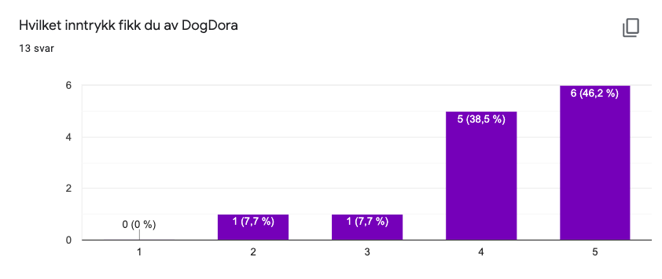
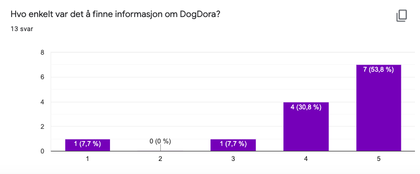
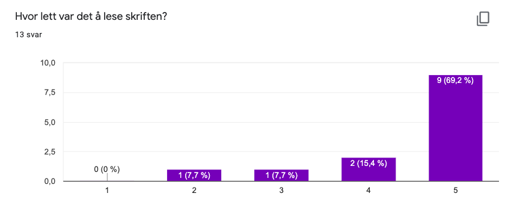
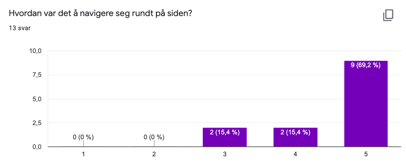
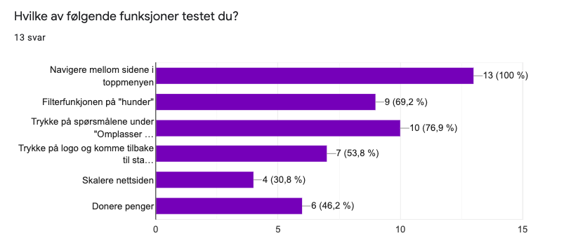

5. november, 2020
Link til nettsideFido Langbein er eieren av DogDora, og vil være vår kontaktperson gjennom hele prosessen av å lage nettsiden.
Alle sendte spørreundersøkelsen ut til venner og familie. Siden kunden vår er fiktiv, kunne vi verken be dem om å svare eller få hjelp til å nå flere personer. I spørreundersøkelsen spør vi om noen generelle spørsmål, som hvor profesjonell den virker, hvor lett det var å navigere og hvordan det er å finne frem til informasjon på siden, og noen mer spesifikke, som å filtrere hunder, prøve å donere penger og se på spørsmål om du skal omplassere hund. Her er link til spørreundersøkelsen med redigeringstilgang slik at dere kan se alle individuelle svar:
SpørreundersøkelseI tillegg til å sende ut spørreundersøkelsen testet vi nettsiden på noen brukere i en observasjon. Da lot vi brukeren navigere seg gjennom nettsiden og prøve og feile uten noen innblanding fra vår side. På den måten fikk vi testet nettsiden i en tilnærmet reell situasjon, og fikk innblikk i hva som var intuitivt og ikke.
Brukertestene ga oss en bedre og dypere forståelse på hvordan målgruppen brukte nettsiden - noe vi ikke hadde funnet ut kun med en spørreundersøkelse.
Målgruppen vår er mennesker som er på utkikk etter å adoptere en hund, omplassere sin egen hund eller støtte DogDora som å jobbe frivillig eller donere penger. Derfor testet vi nettsiden på mennesker dette kan være relevant for, for å få en så ekte som mulig situasjon. Det kan være en ganske bred gruppe, men hovedsaklig mennesker med et relativt stort sted å bo (for å kunne ha en hund) og ikke under 20 år.
Brukertestene ble utført på mobil og laptop i følge spørreskjemaet. I spørreundersøkelsen brukte 61,5% PC/Mac, og 38,5% mobil. Dette ga oss gode tilbakemeldinger på om nettsiden fungerte på ulike plattformer og skjermstørrelser. Vi fikk inntrykk av at den fungerte bedre på laptop enn på mobil, noe som er forståelig da nettsiden vår ikke er optimalisert for mobil. Likevel var den generelle feedbacken fra brukerne på mobil grei.
I tillegg til å sende ut skjemaet og la brukerne teste siden i sine egne omgivelser utførte vi en brukertest hvor vi satt ved siden av og observerte brukeren. Da ga vi den oppgaver den skulle utføre, som "finn en hund du vil adoptere", "meld deg som frivillig" eller "finn telefonnummeret til DogDora". Under utførelsen av oppgavene observerte vi bare hvordan brukeren navigerte seg rundt på siden, og hvor lang tid den brukte. Ut fra denne testen fant vi ut at informasjonen var ganske enkel å finne, da brukerne ikke lette lenge etter svar.
Det vi endret på etter denne testen var å legge til linker i telefonnummer/epost/adresse på kontakt oss siden. Brukeren prøvde å trykke på nummeret for å ringe, men det gikk ikke. Derfor la vi til en link direkte. Dette hadde vi ikke tenkt på, og var en verdifull tilbakemelding fra brukertesten. Det andre fikk vi også tilbakemeldinger på gjennom spørreskjemaet, som å ha et kryss på modalen for å komme tilbake til alle hundene, og endre på skifting mellom norsk og engelsk.
Her ser vi at folk fikk generelt et godt inntrykk av DogDoras nettside. Her har samme person som synes tekst ødela inntrykket sagt to, som gir mening
Her ser vi at de fleste synes det var enkelt å finne informasjon om nettsiden. Den ene personen som svarte 1 (lavest) skrev også en kommentar om at det var mye skrivefeil og bytting mellom engelsk og norsk (som er helt forståelig da vi ikke har jobbet med teksten på nettsiden.)
Her ser vi hvor enkelt folk synes det var å lese teksten. De fleste ga topp score, men noen synes det var vanskelig. Det gir mening, siden teksten på mobil er ganske vanskelig å lese.
Navigeringen på siden ser det ut til at de fleste testerne likte. Det kan tenkes at de som testet på mobil hadde litt større problemer selv med hamburgermeny, da siden ikke er spesielt laget for mobil.
Vi testet også hva folk testet ut, for å se hva folk testet da de var på nettsiden. Her ser vi at alle brukte navbaren, men ganske få testet å skalere nettsiden (som er ganske forventet når man er på en laptop).
Vi fikk noe feedback gjennom spørreundersøkelsen som testerne kunne skrive inn fritt. De aller fleste kommentarene var positive (eks “jeg likte siden”, “Den ser proff ut”), men noen var mer negative (eks “Skrivefeil og bytting mellom engelsk og norsk ødela inntrykket”, “det burde være en måte å komme seg ut av en spesifikk hund”).
De aller fleste tilbakemeldingene var ikke gjentagende, og vi endret dem derfor ikke. Vi hadde en tilbakemelding som to ganger som gikk på overlayet på hunder - under testen hadde vi ikke noe kryss for å komme seg ut av overlayet. Man kunne trykke hvor som helst utenfor overlayet for å komme seg ut. Dette var åpenbart ikke tydelig nok og vi valgte derfor å legge til et kryss slik at det ble tydeligere. Vi tok ikke vekk at man kunne lukke overlayet ved å trykke utenfor, siden de fleste brukerne skjønte det.
Ingen av innsendingsskjemaene våre hadde noe tydelig feedback på om man fikk sendt inn eller ikke. Vi la derfor på en melding i en pop-up som sa man hadde sendt inn, slik at det var lettere å forstå.
Det har vært spennende for oss designstudenter å få bygget noe “ekte” og ikke bare sluttet ved en prototype i Figma. Det er flere utfordringer en designer aldri har vært borti før når ting skal implementeres, og vi alle føler vi har fått en bedre forståelse for utviklerne vi en dag skal jobbe sammen med. Vi er glade for at vi la så mye arbeid ned i planleggingen som vi gjorde, og ser at planlegging er helt essensielt for å kunne gjennomføre et slikt prosjekt effektivt. Siden kunden vår ikke var ekte var det noen ting som ble enklere. Vi slapp å bruke tid sammen med kunden for å finne ut hva de ønsker og slikt, men det ga oppgaven mer “skolepreg”, som er litt dumt.
Alt i alt lærte vi både hvordan vi skal kode enkle nettsider og litt mer om hvordan utviklere jobber - som er en god lærdom å ta med seg videre i studiet. Vi har også blitt flinkere å skrive kode i HTML, JavaScript og CSS, noe som kan være veldig nyttig til senere.